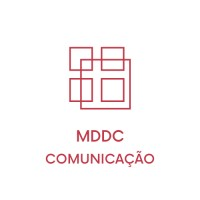

01 / palavras↗
Blog pessoal
A Linha
do Trem
O lugar onde escrevo o que penso. Um espaço para observar o mundo, encontrar palavras e deixar as ideias seguirem viagem.
Ler o que ela escreve ↗✳ Ideias em movimento
Jornalista, comunicadora, escritora.
E um monte de outras coisas pelo caminho.
“Escorpiana, tatuada e viajante. Jornalista que ama pontos finais, respeito ao próximo e refrigerante de laranja.”
Pensar, ligar os pontos, escrever, organizar. Ter atenção aos detalhes e às pessoas: isso me guia no trabalho e na vida.
Há mais de 12 anos, transito pela comunicação em ambientes complexos e em transformação. Entre estratégia e operação, conecto comunicação interna e externa, conteúdo, marca, cultura e reputação — sempre com curiosidade, escuta e olhar atento para o que vem pela frente.
Também dou aulas de Português para brasileiros e estrangeiros. Porque palavra boa abre caminho.
Conheça a Marina profissional ↗Projetos que nasceram de diferentes vontades — escrever, acolher, construir.
Blog pessoal
O lugar onde escrevo o que penso. Um espaço para observar o mundo, encontrar palavras e deixar as ideias seguirem viagem.
Ler o que ela escreve ↗Impacto social
Ajudamos mulheres na busca pelo autoconhecimento. Desfazendo Nós e criando novos laços.
Conheça o projeto ↗
COMUNICAÇÃOFrente empreendedora
Estratégias de comunicação, conteúdo e cultura para fortalecer narrativas, marcas e relações.
Conheça a MDDC ↗Um lugar para pensar em voz alta
“O lugar onde ela escreve o que pensa.”
Tem a Marina que planeja, conecta e faz acontecer. E tem a Marina que observa, se inquieta e escreve. Aqui, a viagem é pelas ideias.
Entrar no blog ↗Comunicação é trabalho de gente. Gosto de juntar visão ampla e atenção ao detalhe, dados e sensibilidade, planejamento e movimento.
Mercado Bitcoin · Suhai Seguros · Any Any
MM Soluções · InformaEnergy · EGAESE
Tr3s Consultoria Social · In Forma Software
Comunicação corporativa em ambientes de alta complexidade e transformação cultural.
Comunicação interna e externa, conteúdo, marca, employer branding, posicionamento executivo, crise e eventos.
Metodologias ágeis, inteligência artificial, DE&I, bem-estar e conversas que abrem caminhos.
Quatro vezes vencedora do prêmio Empresa que melhor se comunica com os jornalistas.
Vencedora do Prêmio Aberje de Comunicação Corporativa.
Coautora do livro-reportagem Viver é um ato de revolução.
Comunicação, conteúdo, cultura e reputação
Talvez pareçam caminhos diferentes. Para mim, são jeitos de fazer a mesma coisa: pensar, conectar pessoas e colocar boas ideias em movimento.
Uma boa conversa também é começo